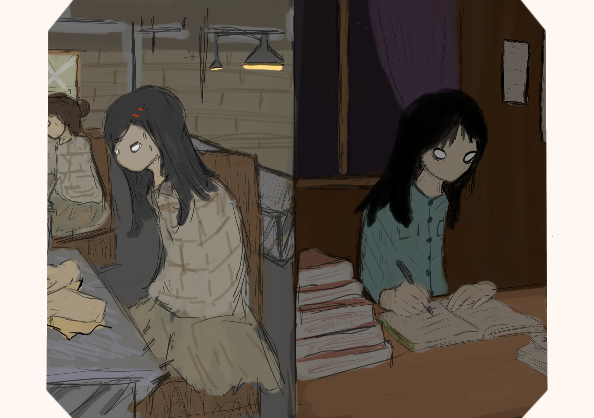
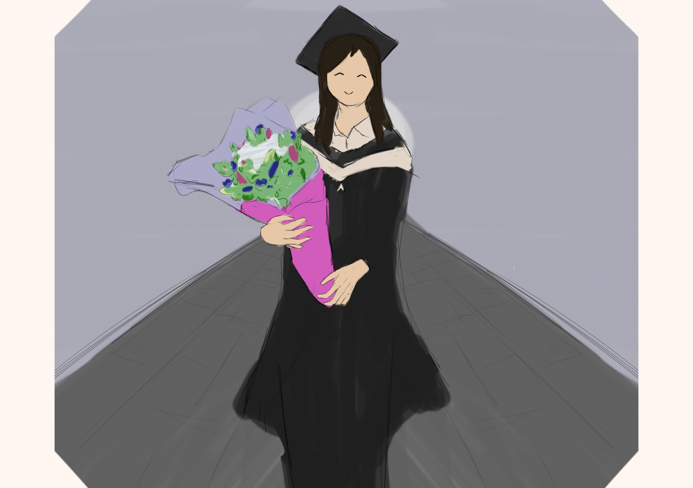

Life Story · Education
《「陳」年往事，新的下一頁》
以下內容根據訪談整理，記下 Elaine 在工作與求學之間，一步一步尋找出路的歲月。

青年 · 車衣歲月
《「衣」然想讀書》
Elaine在會考中獲得佳績，本可以繼續讀書，但照顧家庭的需要始終擺在眼前，她不得不中斷學業，連老師亦替她感到惋惜。面對老師的詢問，她含着眼淚說，自己並不想退學。想讀書，與能夠繼續讀書，原來是兩回事。
年輕時，姐姐曾帶她做車衣暑期工。當時，香港製衣業蓬勃發展，承接大量海外市場的訂單，為不少家庭提供謀生的機會。車衣的手藝，是一份工作，也是支撐家計的辦法。
長姐手勢熟練，動作俐落，她卻常常車歪，速度也跟不上。多年後重提這段經歷，她仍會自嘲自己的手藝。相同的布料和衣車，到了兩姊妹手上，做出來的成果卻很不一樣。
車衣讓她看見一條靠手藝謀生的路，也讓她逐漸認識自己的長處與限制。姐姐能夠勝任的工作，卻未必適合自己，她需要尋找另一種出路，而讀書仍是她不願放下的選擇。
然而，重新拿起書本之前，她得先算清楚生活的開支。工作收入要交家用，也要留下足夠的學費。那段車衣的日子，並非是她的鐵飯碗，而是她尋找出路的墊腳石。衣服未必縫得好，但書始終放不下。往後的日子，她開始徘徊在工作與課堂之間，走出自己的求學之路。
成人教育 · 夜校
《白天謀生，晚上求知》
隨著成人教育與夜校逐漸發展，加上高等教育院校陸續升格，求學的途徑也漸漸增多。Elaine也把握機會，積極進修。為了心中那頂四方帽，她把日子分給了工作與書本。
白天，她在出入口公司從事文職工作，與打字機、複寫紙和各種文件打交道。她的工作並不容易，手指常被複寫紙染上藍黑色的油墨，怎麼也洗不掉。在私人公司工作並不輕鬆，有時忙到晚上八、九點，甚至十點才能下班。
工作與進修之間，她亦需要不斷安排和取捨。因此，夜校成了她延續學業的途徑。別人可以集中精神讀書，她卻要在謀生之外，另找時間求知。
這條路走得慢，也走得艱辛，但她一步一步累積，最終在剛升格的公開大學完成大學課程，親手為自己戴上那頂四方帽。
那頂四方帽，承載着多年來兼顧工作與學習的日子。對 Elaine 而言，完成學業的喜悅，是她一直堅持下去的果實，縱使求學的路曾經受阻，她卻一直沒有放下書本。

求學歲月未完 · 她把白天的辛勞與晚上的堅持，寫成自己的下一頁